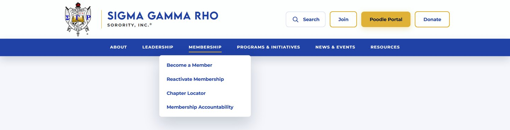
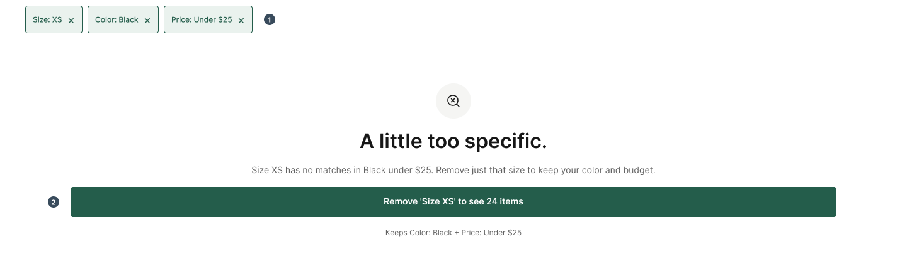

hello internet,
Designed
by Karena
I research how people use products, then design and build the fix.
I’m most interested in the moment someone expected one thing and the screen did something else, and designing so it doesn’t.
hand-coded in html & css
research-led product designer
Product Design
✦
Information Architecture
♡
Usability
✦
Human Behavior
☆
Culture + Technology
✦
research, then design and build

Research + Design + Code: Information Architecture
Sigma Gamma Rho: From Navigation Research to Coded Redesign
Investigated how prospective members find membership information,
then used card sorting and tree testing findings to inform navigation
and a coded redesign.
Card Sorting
Tree Testing
Coded Redesign
Explore research and redesign →

Research + Design: Filter & Quick-add Redesign
SHEIN: redesigning filters after 2 of 5 couldn’t finish
Only 2 of 5 fully completed filtering despite a positive SUS. I designed a recoverable empty state and a size-aware quick add, as desktop and mobile screens.
Usability Testing
SUS
Task Outcomes
See the redesign →
keep exploring?
More ways to find your way around.